Certifications
AWS Solutions Architect Associate
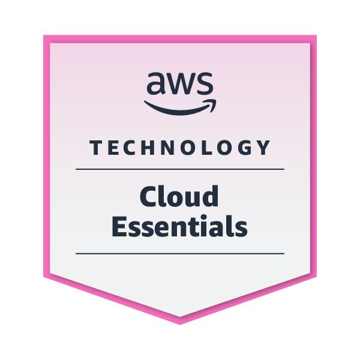
AWS Essentials Training
Cornell Tech Certificate
.png)
UR2PHD Research Badge

GPA: 3.94/4.00
Relevant Coursework: Data Structures and Algorithms, Software Testing, Artificial Intelligence, Database Management, Object-Oriented Programming, Operating Systems, Computer Networks, Computer Graphics


.png "VS Code")


Summer 2026: Incoming Cloud Engineer Intern at Hewlett Packard Enterprise (HPE).
Built and maintained responsive website features using HTML, CSS, JavaScript, and WordPress, improving overall siteusability and reducing page load times by 30% across high-traffic pages. Leveraged Google Analytics insights to boost visitor retention by 25% and conversions by 15%. Collaborated with cross-functional teams to implement SEO optimizations, accessibility enhancements, and content updates, contributing to a 40% increase in organic traffic and faster content deployment cycles.
Collaborated with cross-functional teams to engineer and preprocess over 500 business documents and UI screenshots using Python, YOLO model, and Pandas, improving dataset quality and reducing errors by 15%. Trained and fine-tuned object detection models in PyTorch/ONNX for detecting business-critical elements. Deployed a scalable Flask/Streamlit inference application on AWS/GCP, reducing review latency by 25%.
Contributing to interdisciplinary research at the Security and Privacy Research Lab (SPRLab), under Dr. Shirin Nilizadeh. Analyzing scam victim narratives on social media using AI/ML, NLP, and behavioral analysis to enhance online safety. Leveraging large-scale data pipelines, annotated datasets, and GPT-based thematic classification to uncover privacy trends. Exploring intersections of cybersecurity, psychology, and AI to understand digital manipulation and user vulnerability.

Selected as an AI/ML fellow through Break Through Tech's Virtual AI program at Cornell Tech. Engaged in advanced AI/ML training and research projects under the guidance of Cornell Tech faculty. Collaborated with peers on cutting-edge AI applications and machine learning solutions. Developed practical skills in implementing AI/ML solutions for real-world problems.
Resolved over 100 IT issues, boosting first-contact resolution and raising user satisfaction by 25%. Troubleshot and maintained Windows and Linux lab systems, performing tasks such as password resets, peripheral setup, and shell-based diagnostics, thereby reducing system downtime by 15%. Onboarded over 20 users with VPN/login setup and security best practices, cutting follow-up queries.
A collection of my recent work and experiments
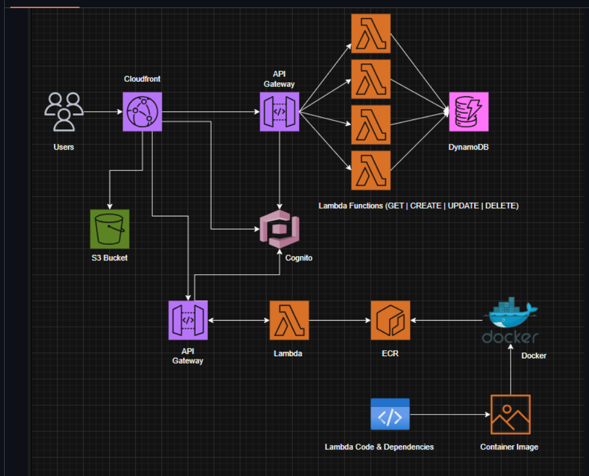
Customer-focused app that transforms grocery items into personalized meal recommendations using AWS CloudFront, Lambda, API Gateway, and DynamoDB. Achieved 40% latency improvement through Docker containerization and 80% faster deployment via CI/CD with GitHub Actions and Terraform.
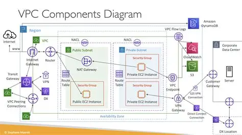
Designed and deployed secure AWS VPC architecture across 3 Availability Zones, achieving 99.99% high availability. Implemented public/private subnets, IGW, and NAT Gateways with Linux-based EC2 bastion hosts. Automated infrastructure provisioning using CloudFormation, reducing setup time by 80%.
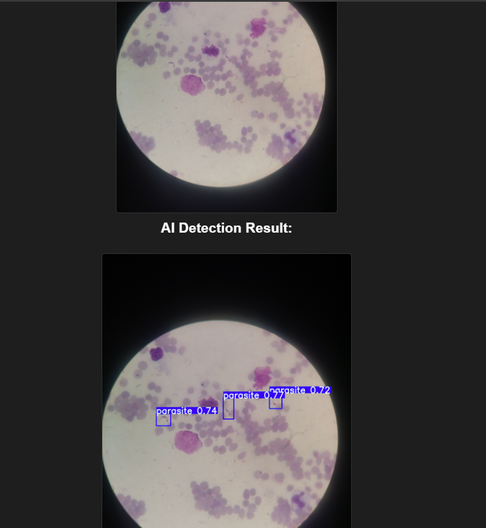
AI-powered web application for detecting Trypanosoma cruzi parasites in blood smear images with 92%+ accuracy using YOLOv8. Features real-time inference and dynamic visualization with FastAPI backend and modern web interface.
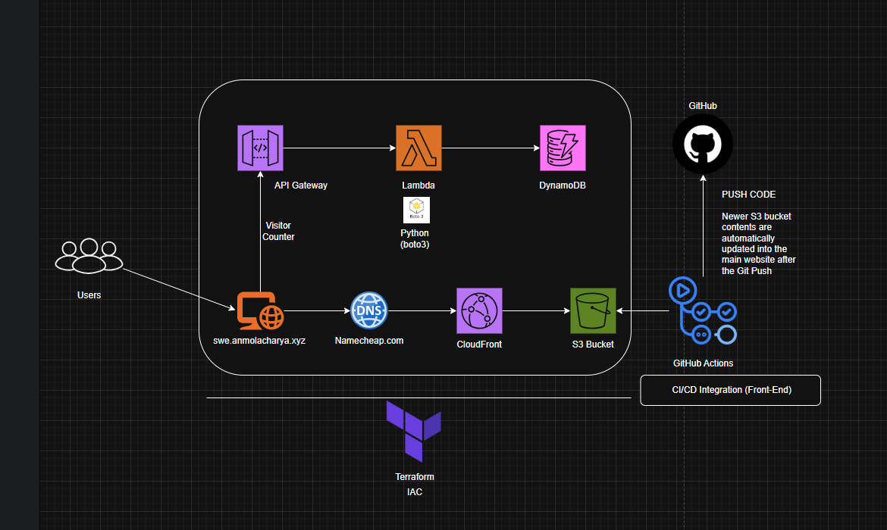
Serverless resume website built with AWS services, featuring CI/CD automation, visitor counter, and global CDN distribution with enterprise-grade security.
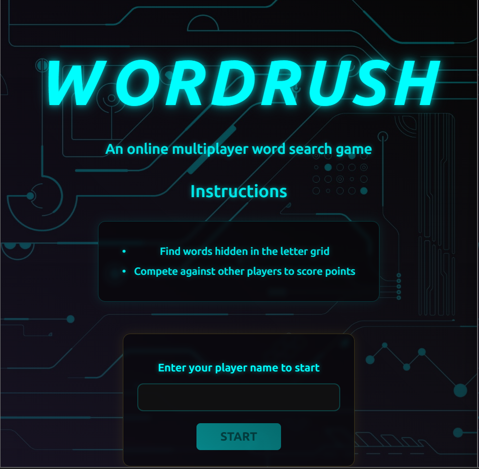
Multiplayer crossword game with real-time WebSocket synchronization, supporting concurrent players and achieving 95% unit test coverage.
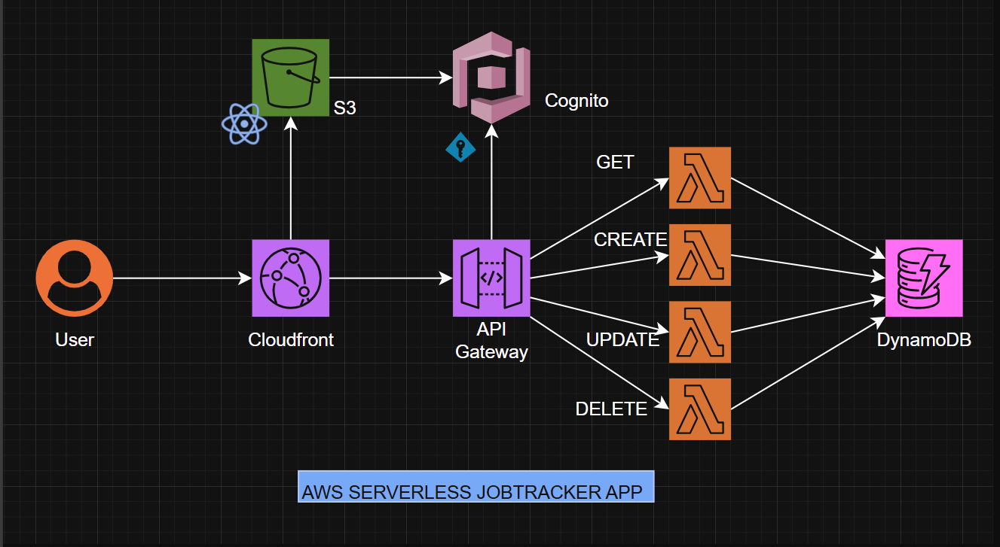
Fully serverless job tracking platform built with AWS services, handling 250+ weekly user sessions with OAuth2.0 authentication and 99.9% uptime.
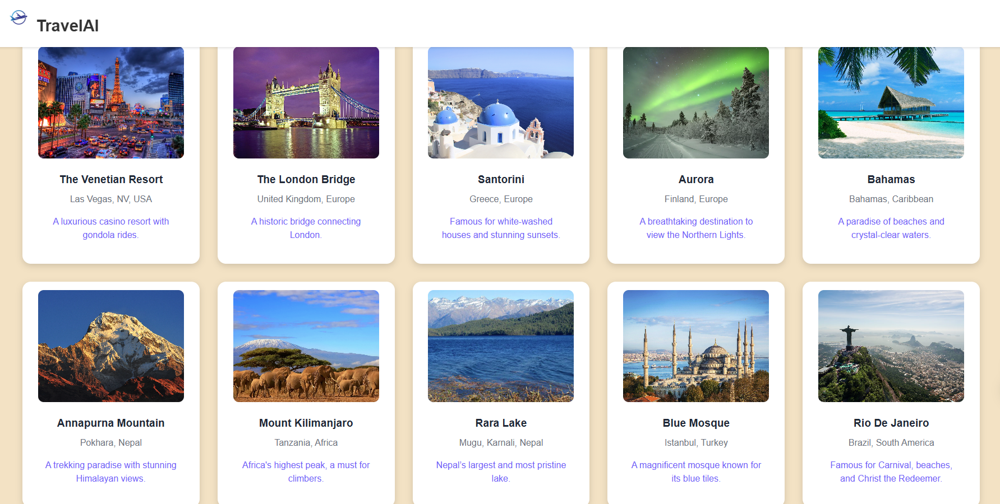
Full Stack AI web application to help plan trips seamlessly. Integrated Google Gemini API to extract travel details effectively. Used Google Firebase for storing user details and trip information with Google Authentication for secure user sign-in. Designed and developed a responsive and appealing frontend with React.js and React Router.
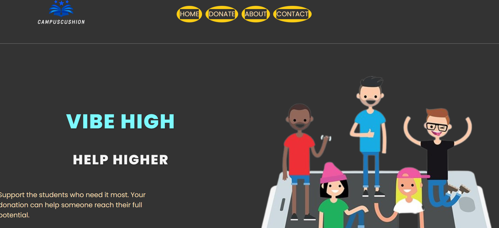
Built a secure donation platform using MERN stack, enabling campus students to receive financial support. Engineered an optimized backend using Node.js, Express.js, and MongoDB, enabling seamless data storage while achieving 99.9% uptime through database indexing and efficient API routing. Created a responsive frontend with React.js utilizing React Router for multi-page navigation with optimized route handling and state management.
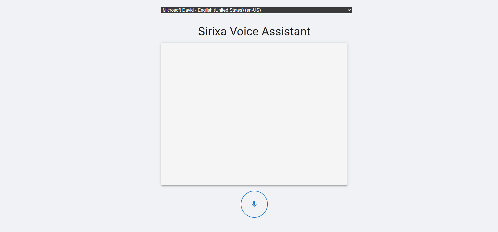
Developed an AI-powered voice assistant with 95% accuracy, enabling query responses, real-time updates, and executing commands using Google Gemini, OpenAI, and Weather APIs. Designed a responsive frontend with React.js and Material UI, optimizing user interaction with an intuitive interface. Engineered a FastAPI-based backend, processing 500+ voice commands per minute, optimizing request handling and ensuring third-party API integration with low-latency execution.
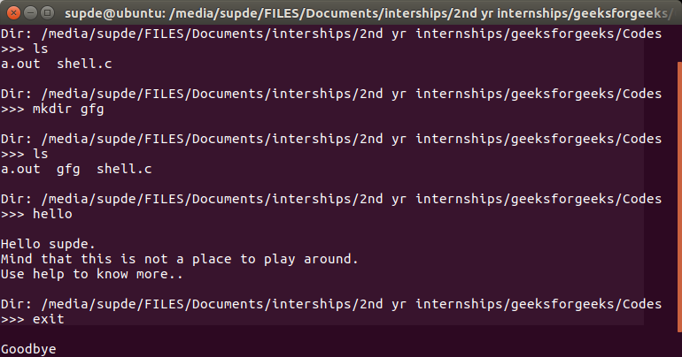
Developed a custom Unix shell with interactive and batch processing modes, simulating core functionalities of standard Unix shells like bash. Implemented command parsing and process management, resulting in improved execution efficiency by 60% through optimized process control. Built and tested using a make build system and custom test scripts within GitHub Codespace, ensuring 99% test coverage and robust performance.
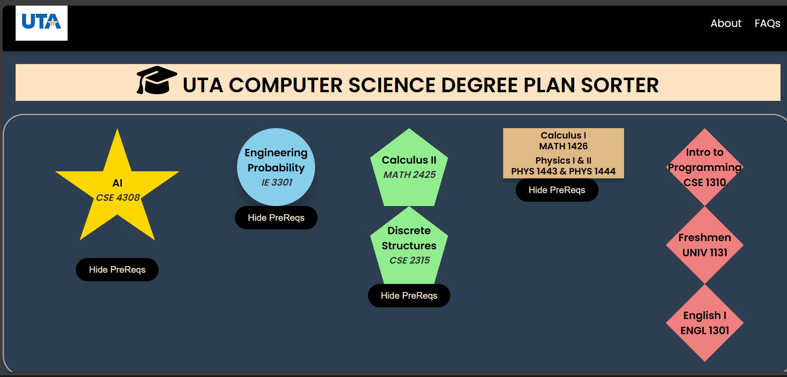
Developed an interactive web application using JavaScript, HTML, and CSS to assist UTA CSE students navigate their CSE degree requirements from freshmen to senior year. Simplified the complex structure of UTA CSE Degree flowchart by automating the visualization of course prerequisites. Ensured accurate and efficient degree planning, reducing manual effort by 50% and errors by 90% for UTA CSE students.
Developed and managed MySQL queries in the database server environment, increasing database reliability by 40% using XAMPP Server. Created backend functionality using PHP, improving data operation efficiency by 50% through integration with a responsive web interface. Enabled robust data management and categorization of doctoral students, improving administrative efficiency by 75% and streamlining operations.
Inducted into the Honor Society of UPE, recognized as one of the top 1% of Computer Science students for outstanding academic performance and professional development. (Fall 2024 - Present)
Engaged in Hackathons and tech-focused events through the Association for Computing Machinery.
UTA College of Engineering: Academic year 2022, 2023, 2024